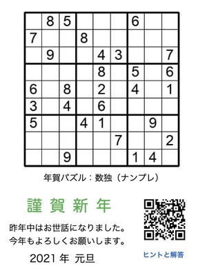

�年賀状2021年

今年の年賀状は、年賀状と鉛筆で遊べる数独（ナンプレ）としました。ナンプレ（数独）問題集のレベル4（普通）、問題番号2021からオンラインで解くこともできます。このページはヒントと解答です。
数独（ナンプレ）のルール
- あいているマスに1〜9のいずれかの数字を入れる。
- 縦・横の各列と、太線で囲まれた3×3のブロック内に、同じ数字が複数入ってはいけない。
- 数独のルールと解き方 by ニコリ (数独はニコリの登録商標です)
ヒント
次の3つの解法を使うことで解けます。
- 単独候補マス (Hidden single): あるブロックまたは列内に、ある数字が入る候補となるマスが1つしかない場合に、そのマスにその数字が入る。ニコリの解説ではブロッケンまたはレッツミー。基本テクニックの1つ目。
- 単独候補数字 (Naked single): あるマスに入る候補となる数字が1つしかない場合、つまり同じ縦横の列とブロック内に他の数字がすべて入っている場合、その数字に確定する。ニコリの解説ではマスミ。基本テクニックの2つ目。
- ポインティングペア (Pointing pair): 2つのマスのどちらかにある数字が入るときに、その2カ所と同じ列またはブロック内にはその数字が入らない。ニコリの解説では「いずれにしても理論」。基本テクニック3つ目の「候補数字の配置による絞り込み」。
解答
解答を見る
関 勝寿